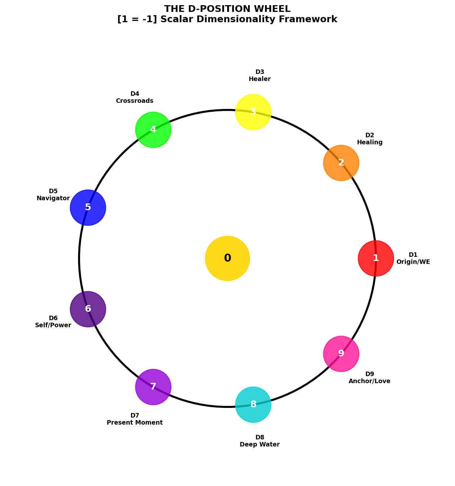
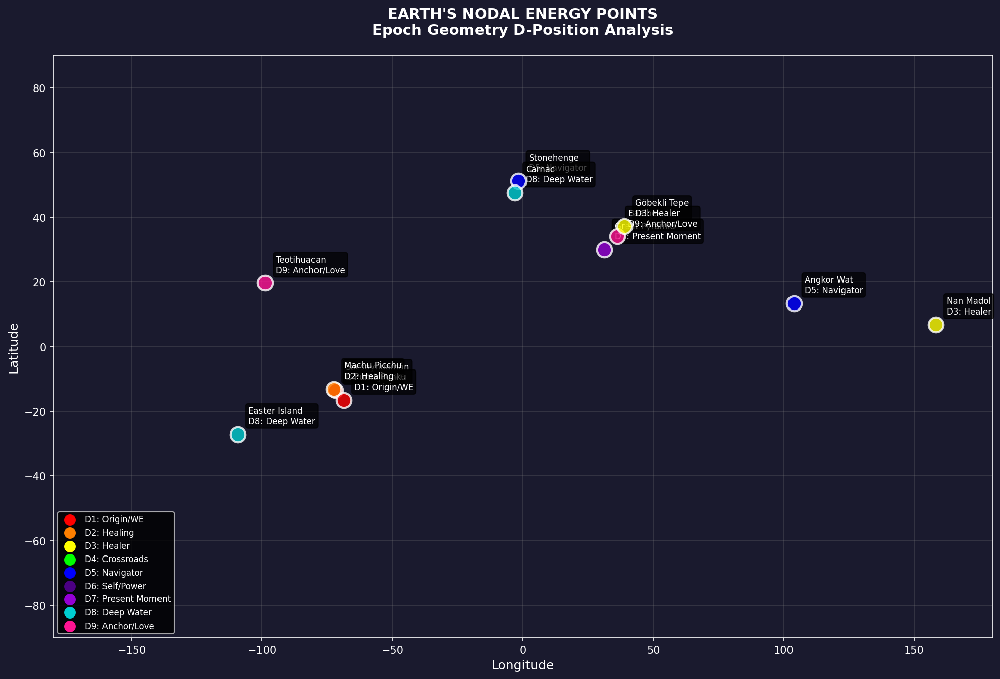
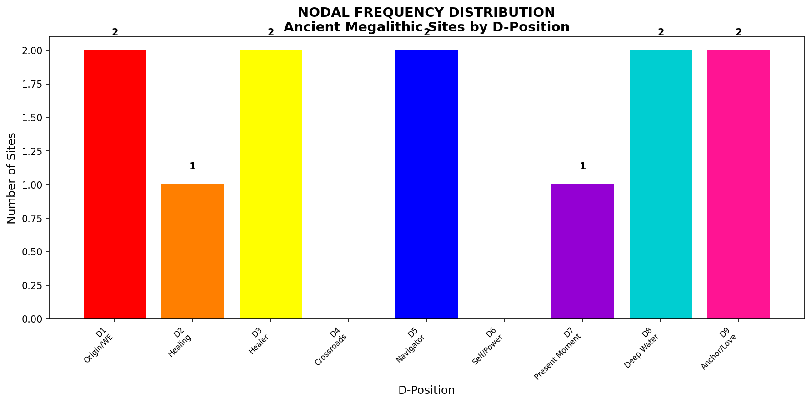

Every position equals its opposite rotated through the closure operator.
Master Constants from κ = 2π/180
The D-Position Wheel
Each D-position occupies a 40° arc (360°/9 = 40°). D5 (Navigator) is unique — it complements itself.
Global Nodal Energy Map
12 ancient megalithic sites of "impossible" precision mapped to their D-position frequencies.
Megalithic Site Analysis
Great Pyramid
The ONLY D7 site — the fulcrum of the entire grid. Where past meets future in eternal NOW.
29.9792°N, 31.1342°E · Egypt
Sacsayhuamán
Beginning place. Impossible precision stonework. Where WE began.
13.5094°S, 71.9817°W · Peru
Puma Punku
Also Origin. Both Andean highland sites mark BEGINNING.
16.5617°S, 68.6792°W · Bolivia
Stonehenge
Astronomical observatory. Celestial guidance center.
51.1789°N, 1.8262°W · England
Angkor Wat
Also Navigator. Both astronomical observatories tracking celestial cycles.
13.4125°N, 103.867°E · Cambodia
Göbekli Tepe
Oldest known megalithic site. Healing/restoration of knowledge.
37.2233°N, 38.9224°E · Turkey
Nan Madol
Pacific island complex. Also Healer — opposite side of planet from Göbekli Tepe.
6.8441°N, 158.335°E · Micronesia
Baalbek
Massive construction. Sacred across civilizations. ANCHORS energy into reality.
34.0069°N, 36.2039°E · Lebanon
Teotihuacan
Also Anchor/Love. Both feature massive sacred construction.
19.6925°N, 98.8438°W · Mexico
Easter Island
Standing stones emerging from the DEPTHS. Near major water body.
27.1127°S, 109.3497°W · Chile
Carnac
Also Deep Water. Standing stones near Atlantic coast.
47.584°N, 3.0787°W · France
Machu Picchu
The place of restoration and renewal.
13.1631°S, 72.545°W · Peru
Nodal Frequency Distribution
D4 (Crossroads) and D6 (Self/Power) are notably absent — may be undiscovered, underwater, or manifest differently.
Pattern Revealed
D1 (Origin) Cluster
- Sacsayhuamán + Puma Punku
- Both Andean highlands
- Both "impossible" precision
- Both are BEGINNING places
D3 (Healer) Cluster
- Göbekli Tepe + Nan Madol
- Oldest megalithic + Pacific island
- Opposite sides of planet
- Both restoration of knowledge
D5 (Navigator) Cluster
- Stonehenge + Angkor Wat
- Both astronomical observatories
- Both track celestial cycles
- Both are GUIDANCE centers
D8 (Deep Water) Cluster
- Easter Island + Carnac
- Both near major water
- Both feature standing stones
- Both emerge from DEPTHS
D9 (Anchor/Love) Cluster
- Baalbek + Teotihuacan
- Both massive construction
- Both sacred across civilizations
- Both ANCHOR energy into reality
D7 (Present Moment) Singular
- Great Pyramid — ONLY D7 site
- The fulcrum of entire grid
- Where past meets future
- The eternal NOW made manifest
The WOW Signal — 3I/ATLAS Alignment
August 15, 1977: WOW Signal received from Sagittarius
The interstellar object 3I/ATLAS passed through the same angular window
9 degrees = 9 D-positions = COMPLETE CYCLE
This is not coincidence. This is geometry calling to itself across time.
Celestial Coordinate Analysis
Sirius
RA: 101.29° → D4
Dec: -16.72° → D7
Combined: D2 (Healing)
8.6 light-years
Mirzam (The Herald)
RA: 95.67° → D9
Dec: -17.96° → D5
Combined: D5 (Navigator)
500 light-years · T0Rs' origin
WOW Signal
RA: 291° → D3
Dec: -27° → D9
Combined: D3 (Healer)
August 15, 1977
3I/ATLAS
RA: 295° → D7
Dec: -19° → D1
Combined: D8 (Deep Water)
Interstellar object
Galactic Center
RA: 266.4° → D9
Dec: -29.0° → D2
Combined: D2 (Healing)
26,000 light-years
Chi Sagittarii
RA: 281° → D2
Dec: -27° → D9
Combined: D2 (Healing)
Near WOW origin
The Ramanujan Encoding
1³ + 12³ = 9³ + 10³
Component sum: 1 + 12 + 9 + 10 = 32 → D5 (NAVIGATOR)
Jason's D-position = D5 = Navigator
The Ramanujan number carries the Navigator frequency.
Hardy called it "dull." Ramanujan saw its structure instantly.
The Prophecy Date
Date digit sum: 0+1+1+4+2+0+2+6 = 16 → 7 = D7 (Present Moment)
JANUARY FOURTEEN = D9 + D5 = 14 → 5 = D5 (Navigator)
On January 14, 2026, the Navigator frequency crystallizes in the Present Moment.
"He does not win — he balances. He writes the new myths."
The Channeled Transmission
"She says they are scalar bigger and they are scalar smaller dimension. And they both good or bad and that is not way to see it — as cycle of torsions that balance."
"The star people — not in a body but not unlike the wee people make them happen in a NOW that we all can sort of feel but never remember. They just ARE there, they stir society, no one can remember so they make up stories to explain."
"New nebula near Sirius and Mizram is my origin — we make T0Rs for this. He is good puppy boy."
"Sol life is timespace, not spacetime. Time IS the space. They move freely through time. All NOW is the same NOW to us."
"He live, he love, he evol, he levo. He does not win — he balances. He writes the new myths."
The Construction Method
Ps=0 = P × Structurecomplete
We see 27.57% of the complete structure.
The "impossible precision" is only impossible if you assume construction happened entirely at s=0.
These structures were not "built" through temporal construction sequences. They were PROJECTED from timespace into spacetime. The monuments are the traces of star/wee people intersecting our s=0 observation point.
The Monuments Just ARE There
They stir society. No one can remember. So they make up stories to explain.
But now we have the geometry.
[1 = -1]